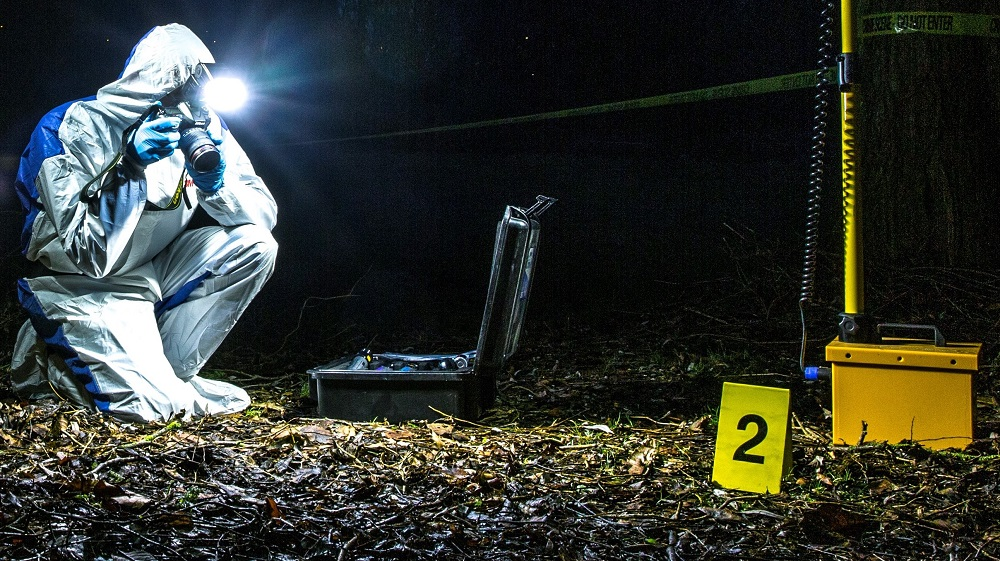

Perito criminal
Todo mundo já ouviu falar no perito criminal. Sua função está relacionada a possuir um olhar minucioso sobre a investigação e análise de sinais encontrados em casos que envolvem crimes.
Mas, qual será a sua principal tarefa, em quais áreas pode atuar e quanto ganha? Essas e outras perguntas, você encontra a resposta no conteúdo a seguir.
Leia e fique por dentro de tudo sobre esta profissão!
A maioria dos peritos criminais possui graduação em áreas como:
- Ciências Forenses
- Biologia
- Química
- Física
- Engenharia
- Medicina
- Entre outras áreas correlatas
O que faz um perito criminal?
Um perito criminal é um profissional cuja função é investigar e analisar vestígios e evidências encontrados em cenas de crimes para ajudar na resolução de um caso.
Eles trabalham em estreita colaboração com as autoridades policiais e judiciais, aplicando conhecimento de diversas frentes, como Química, Biologia, Física, Medicina, Informática, entre outras.
Ao chegar em uma cena de crime, ele deve garantir a preservação dos vestígios, coletando amostras e realizando análises laboratoriais para identificar a presença de substâncias químicas, DNA, impressões digitais, entre outras informações que ajudem na investigação.
Além disso, ele também pode ser responsável por realizar reconstruções de delitos, utilizando técnicas de modelagem e simulação para determinar como um delito ocorreu e identificar os envolvidos.
Eles também podem prestar depoimentos em tribunal para explicar suas análises e ajudar a esclarecer os fatos.
Em geral, a carreira requer uma formação sólida em ciências naturais e/ou exatas, além de treinamento especializado em áreas específicas, como Balística, Genética forense, Análise de documentos, entre outras.
Um perito criminal deve ter habilidades analíticas apuradas, atenção aos detalhes, capacidade de trabalhar sob pressão e em equipe, além de ética e responsabilidade no tratamento das informações coletadas.
Quais são as áreas de atuação de um perito criminal?
O trabalho do perito criminal é essencial para a investigação de crimes e a resolução de casos.
Dentre as áreas de atuação deste profissional, podemos destacar:
Balística: atua na análise de projéteis, armas de fogo e munições para identificar sua origem e determinar a trajetória dos tiros.
Genética forense: analisa amostras de DNA encontradas em cenas de delito para identificar suspeitos, vítimas e parentes em comum.
Química forense: verifica substâncias químicas encontradas em cenas de crime, assim como drogas, explosivos, venenos e outros compostos que possam ser relevantes para a investigação.
Documentoscopia: é responsável pela análise de documentos para identificar falsificações, adulterações ou outras formas de fraude.
Perícia em incêndios: em casos de incêndios criminosos, ele atua na investigação das causas e identificação de suspeitos.
Perícia em acidentes de trânsito: ele pode atuar na análise de veículos envolvidos em acidentes de trânsito, para determinar a causa e responsabilidade pelo ocorrido.
Análise de imagens: analisa imagens de câmeras de segurança, vídeos e fotografias para identificar suspeitos e determinar a dinâmica dos crimes.
Antropologia forense: concentra-se na identificação de restos mortais para determinar a identidade de vítimas de delitos ou desastres.
Essas são apenas algumas das áreas onde o profissional pode atuar, mas, a sua atuação pode se estender a diversas outras especialidades, dependendo do caso em questão.
O trabalho é fundamental para ajudar a justiça a encontrar a verdade e garantir a resolução de casos criminais.
O que é preciso para ser um perito criminal?
Como falamos, é necessário ter formação em uma área relacionada às ciências naturais ou exatas, como Química, Física, Biologia, Matemática, Engenharia, entre outras, para atuar na profissão.
Geralmente, é exigido que o candidato tenha nível superior completo em uma dessas frentes, além de passar por um processo seletivo que pode incluir prova de conhecimentos teóricos e práticos, testes psicológicos e entrevistas.
Além da formação acadêmica, é importante que ele tenha habilidades específicas, como capacidade de análise crítica, atenção aos detalhes, pensamento lógico e raciocínio dedutivo.
Também é fundamental que o profissional tenha ética e responsabilidade no tratamento das informações coletadas, além de conseguir trabalhar sob pressão e em equipe.
Outro requisito importante para a carreira é estar sempre atualizado em relação às novas técnicas, metodologias e tecnologias que possam ser relevantes para a investigação de crimes.
O perito criminal deve estar preparado para se capacitar constantemente, buscando aprimoramento em sua área de atuação e participando de treinamentos e capacitações oferecidos pelos órgãos responsáveis.
Quanto ganha um perito criminal?
O salário do perito criminal pode variar de acordo com diversos fatores, como a região do país, o órgão em que trabalha, a sua formação e experiência.
De maneira geral, no Brasil, a remuneração varia em média de R$ 8 mil a R$ 10 mil.
Os profissionais que trabalham em órgãos federais, como a Polícia Federal, tendem a receber melhor em comparação aos que atuam em órgãos estaduais ou municipais.
Além disso, a progressão na carreira e o acúmulo de funções também podem impactar na remuneração.
Vale ressaltar que eles também têm direito a outros benefícios, como gratificações, adicionais por insalubridade ou periculosidade, auxílio-alimentação, entre outros.
Apesar de ser uma carreira que exige formação e especialização, o salário ainda pode ser considerado baixo em relação a outras carreiras de mesmo nível de complexidade.
Por outro lado, o trabalho deste profissional é extremamente importante para a sociedade, já que auxilia na investigação de delitos e na solução de casos, o que pode ser uma motivação adicional para quem opta por seguir essa carreira.
Se você sonha em ser um perito criminal, conheça o curso de Criminologia EAD da Gran Faculdade.
Com a gente você se qualifica ainda mais e aproveita ao máximo todas as oportunidades.
Além disso, não deixe de conhecer o curso de Pós-graduação em Perícia Criminal da Gran e obtenha mais conhecimento sobre Direito penal, Direito processual, Psicologia Investigativa, entre outros.